器材库 > APS及其以下画幅可换镜头数码相机 > D7200
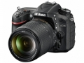
规格总览
产品类型
APS画幅可换镜头数码相机
发布日期
2015-03-02
厂家推荐价格
1,196.00 （美元）
影像规格
影像传感器
CMOS
影像传感器尺寸
约23.5mm x15.6mm
总像素
约2,472万
有效像素
约2,416万
影像处理器
EXPEED 4
最大解像度
DX（24×16）图像区域6000×4000(L)
静态图像格式
JPEG, NEF(RAW), NEF(RAW)+JPEG
短片尺寸
最高1920×1080 ； 60p （逐行）
短片格式
MOV, MPEG4-AVC/H.264
除尘系统
清洁图像传感器、图像除尘参考数据（需要另购的Capture NX-D 软件）
镜头和对焦
镜头卡口
Nikon F
对焦点
可从51 或11 个对焦点中选择
焦点锁定
半按快门释放按钮（单次伺服AF）或按下AE-L/AF-L 按钮可锁定对焦
AF辅助灯
有
手动对焦
支持
曝光控制
测光系统
使用2016 像素RGB 感应器的TTL 曝光测光
测光范围
矩阵或中央重点测光：0 至20EV 点测光：2 至20EVEV
快门类型
电子控制，纵走式，焦平面快门
快门速度
1/8000–30 秒
闪光同步速度
X=1/250 秒；在1/320 秒或以下速度时，与快门保持同步（速度为1/250至1/320 秒之间时闪光范围缩小）秒
曝光补偿
±5EV以1/3EV级调整
自动曝光锁
有
ISO感光度
可扩展至100-102400
连拍
将影像区域设定为1.3×（18×12）可实现约7幅/秒的帧频
闪光灯
内置闪光灯
弹出式
闪光指数
12
取景器/显示屏
取景器
眼平五棱取景器
取景范围
100%
取景放大倍率
约0.94 （50mm f/1.4 镜头设为无穷远；屈光度为–1.0m⁻1）倍
屈光度调节范围
–2 至+1m⁻1
对焦屏
B 型光亮磨砂对焦屏Mark II，带有AF 区域框（可显示取景网格）
反光镜
即时返回型
反光镜锁定
无
景深预视
有
LCD类型
TFT LCD
LCD尺寸
3.2英寸
LCD像素
约122.9万
视野率
100%
亮度调节级数
可
Live View
有
文件输入/输出
存储卡
SD/SDHC, SDXC
数据接口
高速USB
视频/音频接口
MIC 输入, C型HDMI接口
无线功能
Wi-Fi, NFC
电源
电池
1块EN-EL15 锂离子可充电电池
续航能力
约1,110张静止图像，或者录制约80分钟短片（基于CIPA标准测量）
机身规格
材质
镁合金
颜色
黑色
尺寸
约135.5 × 106.5 × 76mm
重量
（带电池和存储卡，但不包括机身盖）约765g；（仅照相机机身）约675g
其它
工作温度
0 ℃至40℃
工作湿度
85或以下（不结露）%
色国天堂2015-05-30 13:094.38 分
操作性 3.50功能性 4.50美观性 4.00趣味性 4.50耐用性 4.50性价比 4.00解像力 5.00色彩还原 5.00
产品图 / 样片
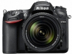
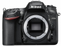
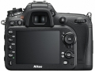
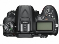
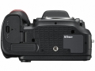
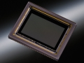
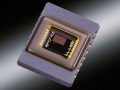
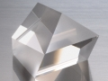
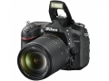
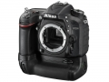
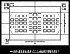
评测 / 相关文章
- 详细内容 （存档）
- 更强更快更专业 尼康D7200单反相机评测 （存档）
- ［试用］尼康D7200实拍样张赏析 （存档）
- ［资讯］尼康D7200数码单反相机开箱 （存档）
相关文章
- ［试用］出色捕捉 用D7200展现她活力倩影 （原站已下线）
- ［试用］更强更快更专业 尼康D7200评测 （存档）
- ［试用］尼康D7200实拍样张赏析 （存档）
- ［资讯］尼康D7200数码单反相机开箱 （存档）